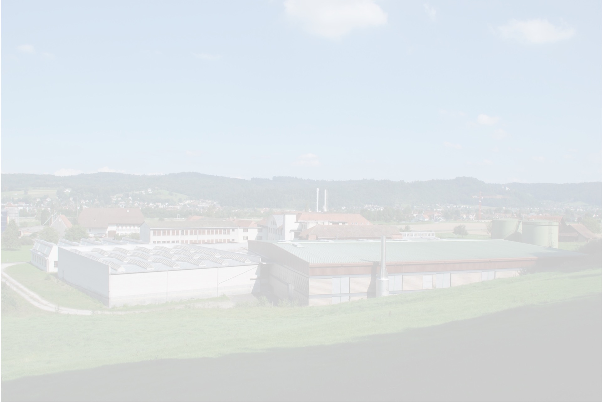

1845
Eine Mühle im Bauernhaus
Gründung einer Garn- und Baumwolltuch-Druckerei in einem Bauernhaus in Strengelbach. Das Handweben prägt zu dieser Zeit das untere Wiggertal.
Strengelbach, Schweiz — seit 1845
Fünf Generationen Bleichen, Färben und Ausrüsten von Garnen, Tricotstoffen, Frottiergeweben und Fertigteilen aus allen färbbaren Materialien — mit einer Kapazität von über 20'000 kg pro Tag und dem Vertrauen führender internationaler Textilmarken.
Willkommen
Die Johann Müller AG ist spezialisiert auf das Bleichen, Färben und Ausrüsten von Garnen, Tricotstoffen, Frottiergeweben und Fertigteilen aus allen färbbaren Materialien. Unsere Produkte sind von ausgezeichneter Qualität und geniessen ein hohes Ansehen auf dem Markt — zu unseren Kunden zählen führende internationale Textil- und Bekleidungsunternehmen.
Mit einer Färbekapazität von über 20'000 kg pro Tag sind wir eines der leistungsfähigsten Garn- und Tricotveredlungsunternehmen der Schweiz. Wir setzen auf Zuverlässigkeit, Qualität, fortschrittliche Technologie und einen raschen Lieferservice.

Produkte & Dienstleistungen
Eine moderne, vollautomatische Kreuzspulfärberei mit einer Färbekapazität von rund 10'000 kg Garn pro Tag.
Eine moderne, vollautomatische Jetfärberei mit einer Färbekapazität von rund 10'000 kg pro Tag, ergänzt durch eine eigene Garment-Färberei.
Materialien: Baumwolle, Viscose, Leinen, Wolle, Seide, Polyester, Polyamid, Polyacrylnitril sowie deren Mischungen — Stapelfaser- und Filamentgarne.
Zertifikate
Zertifiziert seit 1993
Seit 1993 als weltweit erster Textilveredlungsbetrieb zertifiziert — unter Mitwirkung von Dr. Kurt Müller bei der Ausgestaltung des Standards.
PDF herunterladenZertifiziert seit 2011
Seit 2011 für den Bereich Outdoor zertifiziert — schadstofffreie, nachhaltig produzierte Textilien, u. a. beim Färben von Polyamid-Garnen für Bergseile.
PDF herunterladenZertifiziert seit 2009
Seit 2009 zertifiziert für pflanzliche Fasern aus kontrolliert biologischem Anbau und tierische Fasern aus kontrolliert biologischer Tierhaltung.
PDF herunterladenGeschichte
Von einer Garn- und Baumwolltuch-Druckerei im Bauernhaus 1845 bis zu einem der leistungsfähigsten Garn- und Tricotveredlungsunternehmen der Schweiz — eine Zeitreise, geprägt von der Familie Müller.
Gründung einer Garn- und Baumwolltuch-Druckerei in einem Bauernhaus in Strengelbach. Das Handweben prägt zu dieser Zeit das untere Wiggertal.
Nach dem Tod von Johann Müller-Wullschleger tritt Sohn Johann Paul Müller in die Geschäftsleitung ein und gründet neben der Druckerei eine Garnbleicherei und -färberei.
Der Betrieb zieht 300 Meter südlich an den heutigen Standort, direkt neben eine wichtige Wasserquelle.
Umstellung der Garnfärberei vom Handbetrieb auf den maschinellen Färbeprozess. Export nach Britisch-Indien, Südostasien, auf die Philippinen und in die Türkei.
Eine Strickerei und Konfektion werden unter der Marke Streba eingegliedert. Der Erste Weltkrieg unterbricht den Export.
Johann Paul Müller übergibt die Leitung an seine sechs Söhne. Das Unternehmen wird zur „Johann Müller Aktiengesellschaft – Färberei und Strickerei" mit 310 Mitarbeitenden.
Die Firma feiert ihr 100-jähriges Bestehen mit 540 Mitarbeitenden, geführt von fünf Söhnen in Handel, Technik, Strickerei, Verkauf und Färberei.
Dr. Kurt und Werner Müller, Söhne von Werner Müller sen., übernehmen die Färberei in Strengelbach.
Die Johann Müller AG entwickelt den ersten Doppelband-Düsen-Krumpftrockner für schrumpfarme Ausrüstung ohne Chemikalienzusatz — heute Weltstandard.
Sechs Veredlungs- und Färbereibetriebe kommen zur Gruppe: in Bürglen, Basel, Oberuzwil, Anglikon, Gais, Birrwil, Zofingen, Roggwil und Küsnacht.
Als weltweit erster Textilveredlungsbetrieb wird die Johann Müller AG nach dem Oeko-Tex® Standard 100 zertifiziert.
Die Wärmeerzeugung wird von Öl auf Knochenfett umgestellt. Die Initiative wird mit dem Organic Textile Award und dem Schweizer Solarpreis ausgezeichnet.
Markus Müller, Sohn von Dr. Kurt Müller, tritt ins Unternehmen ein.
Gemeinsam mit der Spinnerei Hermann Bühler AG lanciert die Johann Müller AG SwissCotton Rainbow und SwissCotton BeDry — innovative, feuchtigkeitsregulierende Naturgarne.
Standort
Adresse
Brittnauerstrasse 58
4802 Strengelbach
Aargau, Schweiz
Kontakt
Ob Garn, Tricot, Frottier oder Fertigteile — melden Sie sich, unser Team meldet sich umgehend bei Ihnen.